Hyperbolic functions
All the hyperbolic functions are defined as you would expect.
| > | int( sinh(x), x); |
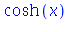
| > | limit( tanh(x), x=infinity ); |

| > | plot( [cosh(x),sinh(x),tanh(x)], x=-2..2, color=[red,black,blue] ); |
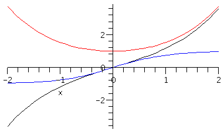
| > | restart; |
Logarithms
The natural logarithm is defined as the ln command.
| > | Int( 1/t, t=1..x ); |
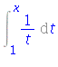
| > | value(%) assuming x>0; |
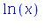
| > | diff( ln(x), x ); |
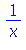
| > | plot( ln(x), x=0..5 ); |
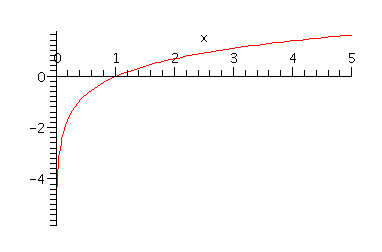
General logarithms can be found with log, giving the base of the log in a special way.
| > | log[10](x); |
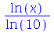
| > | plot( [ log[2](x), ln(x), log[4](x) ], x=0..5, color=[red,green,blue] ); |
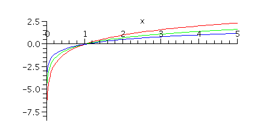
Exponentials
General exponentials are written using the caret ^ for exponential notation.
| > | 2^x; |
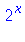
| > | diff( 10^x, x ); |
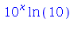
For the natural (base-e) exponential, however, it's better to use the function exp instead. In fact, the number e is not defined.
| > | exp(x); |
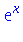
| > | e^x; |
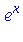
If you look carefully, you will see that the two previous results are a little different (the font of the e).
| > | diff( exp(x), x ); |
| > | diff( e^x, x ); |
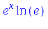
You are free to define e and then use the caret form, but it's easy to forget the defintion step and get confusing results.
| > | e:= exp(1); |
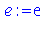
| > | diff( e^x, x ); |
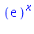
Inverse trig functions
We do not use the "-1" notation for inverse functions in Maple. The inverse trig functions all have names beginning with arc.
| > | arccos(0); |
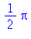
| > | diff( arctan(x), x ); |
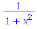
| > | csc( arctan(x) ); |
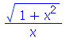
Hyperbolic functions
All the hyperbolic functions are defined as you would expect.
| > | int( sinh(x), x); |
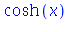
| > | limit( tanh(x), x=infinity ); |

| > | plot( [cosh(x),sinh(x),tanh(x)], x=-2..2, color=[red,black,blue] ); |
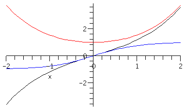